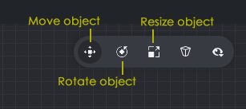
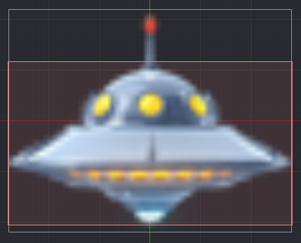
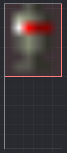

Tutorials for 2D games projects
Landers | Setting up the collision objects.
- In the assets panel, in the 'main' folder, double click, 'invader.go'.
- In the outline panel, right click, 'Game Object' and select, 'Add Component', 'Collision Object'.
- In the properties panel, set the 'Type' property to 'Kinematic'.
- In the outline panel, right click, 'collisionobject' and select, 'Add Shape', 'Box'.
- In the outline panel, click, 'Box'.
- In the editor panel, use the resize editor tools to extend the box to roughly match the shape of the invader. You will find the green arrow and handles on the box when using the move object tool useful for moving and shaping the box.

Aim for this:

- Save the changes by pressing CTRL-S or 'File', 'Save All'.
- In the assets panel, in the 'main' folder, double click, 'main.collection'.
- In the outline panel, find the missile game object.
- In the assets panel, inside the 'main' folder, double click, 'main.collection'.
- Repeat the process on this page from step 2 for creating a collision object box for the missile. Don't skip step 3 accidentally!
Aim for this:

- Save the changes by pressing CTRL-S or 'File', 'Save All'.
- Run the program by pressing F5 or choosing, 'Debug', 'Start / Attach' from the menu bar. The missile should disappear when it hits an invader.

The last part of the collision handling is to destroy the invader and play the explosion. Stage 6c >
 Craig'n'Dave | Version 1.3
Craig'n'Dave | Version 1.3